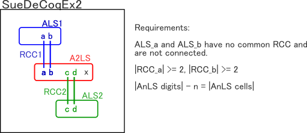
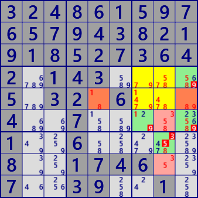

SueDeCoqEx, Franken SueDeCoq
Define conditions for SueDeCoq in a new way, and extend the SueDeCoq algorithm.
- SueDeCoq (原形）
- SueDeCoqEx1 SueDeCoqEx2 FrankenSueDeCoqEx3
- Finned SueDeCoqEx
- Finned SueDeCoqEx exsample print()print()
SueDeCoqEx2
SueDeCoq's mechanism is "Locked", hich is a combination of A2LS and two ALS. The requirements for success of SueDeCoqEx are as follows.
- [Conditions for SueDeCoqEx]
- There are A2LS and two ALS(ALS_a, ALS_b). There is no overlap between the two ALS.
- A2LS and ALS_a have RCC_a. A2LS and ALS_b have RCC_b. |RCC_a|>=2, |RCC_b|>=2.
- There is no overlap between RCC-a and RCC-b.
- |A2LS digits| - 2 = |A2LS cells|
Since A2LS and ALS_a are connected by two or more RCCs, ALS_a always has one RCC digit. So A2LS has the remaining digits. The same goes for A2LS and ALS_b.
Then, the number of digits left in A2LS will match the number of cells. This means A2LS becomes "Locked".

As seen in [SueDeCoqEx conditions], A2LS and ALS do not have row/column/block conditions. The only condition is that they are connected using RCC.
 SueDeCoqEx
stem AnLS : r45c78 #145789
1st ALS : r5c59 #189 RCC;#19
2nd ALS : r68c8 #358 RCC;#58
exclude : r4c9#9 r6c7#9 r6c9#9 r7c8#35
 SueDeCoqEx
SueDeCoqExstem AnLS : r56c2 #1235
1st ALS : r7c2 r8c1 r9c12 #12345 RCC;#15
2nd ALS : r6c1368 #23579 RCC;#23
exclude : r5c1#4 r7c1#4 r7c3#4 r8c3#4 r8c9#4
 SueDeCoqEx
SueDeCoqExstem AnLS : r7c23456 #1245689
1st ALS : r7c9 #24 RCC;#24
2nd ALS : r5c2 r6c3 #159 RCC;#19
exclude: r4c3#9 r7c1#24
 SueDeCoqEx
SueDeCoqExstem AnLS : r56c8 #1589
1st ALS : r7c8 #18 RCC;#18
2nd ALS : r467c9 #1259 RCC;#59
exclude: r5c7#9 r8c8#8 r8c9#2 r9c9#2
3248615976579438219185273642.143....5.32.6...4..7.....1..6.....8..1746..7..39..1.
641..8329873291645592..4187.8..2.4.1.....92.3...41.8.6......73..6.9..51...714.968
82..6.....6.8...2...32..568641...37.53......4.87...6..4563.97..37...1.......5..3.
(using "HoDoKu" Puzzle.）
Franken SueDeCoq
"SueDeCoqEx" extends further with a natural extension. Suppose that A3LS is connected to three disjoint ALS (ALS_a, ALS_b, ALS_c) using RCC. Let's call this "Franken SueDeCoqEx".
- [Franken SueDeCoq conditions]
- There are A2LS and three ALS(ALS_a, ALS_b, ALS_c). There is no overlap between the three ALS. (The "overlapping" condition may be removed...> v5.1)
- A2LS and ALS_a have RCC_a. A2LS and ALS_b have RCC_b. A2LS and ALS_c have RCC_c. |RCC_a|>=2, |RCC_b|>=2, |RCC_c|>=2.
- There is no overlap between RCC-a, RCC-b and RCC-c.
- |A3LS digits| - 3 = |A3LS cells|
The mechanism for establishing Franken SueDeCoq is the same as SueDeCoqEx.
 Franken SueDeCoqEx3
Franken SueDeCoqEx3stem AnLS : r7c79 r89c9 #2345789
1st ALS : r9c7 #24 RCC;#24
2nd ALS : r8c8 #35 RCC;#35
3rd ALS : r4c7 r5c9 #35 RCC;#78
exclude : r5c7#4 r7c8#345
Franken SueDeCoq3
stem AnLS : r7c23 r8c1 r9c2 #1234589
1st ALS : r9c1 #23 RCC;#23
2nd ALS : r8c3 #48 RCC;#48
3rd ALS : r46c3 r5c2 #48 RCC;#19
exclude: r7c1#24
3248615976579438219185273642.143....5.32.6...4..7.....1..6.....8..1746..7..39..1.
641..8329873291645592..4187.8..2.4.1.....92.3...41.8.6......73..6.9..51...714.968
(using "HoDoKu" Puzzle.）
SueDeCoqEx1
"SueDeCoqEx" can also be reduced. This is called"SueDeCoqEx0".
Since ALS and ALS are linked by two RCCs, this is"ALS-XZ doubly linked".
This shows the relationship between ALS-XZ and SueDeCoq.
SueDeCoqEx1
stem AnLS : r79c9 r8c89 #23589
1st ALS : r5c9 #89 RCC;#89
exclude: r4c9#89 r6c9#89
 SueDeCoqEx1
SueDeCoqEx1
stem AnLS : r57c2 #125
1st ALS : r8c1 r9c12 #2345 RCC;#25
exclude: r5c1#4 r6c2#5 r7c1#24 r7c3#4 r8c3#4 r8c9#4
3248615976579438219185273642.143....5.32.6...4..7.....1..6.....8..1746..7..39..1.
641..8329873291645592..4187.8..2.4.1.....92.3...41.8.6......73..6.9..51...714.968
(using "HoDoKu" Puzzle.）
Finned SueDeCoqEx
Just as Fish has Fish with Fin, SueDeCoq also has SueDeCoq with Fin.
Fish with Fin is a pattern with Fin added to BaseSet. When CoverSet is in a position that covers BaseSet and Fin at the same time
It becomes Locked.
SueDeCoq connects AnLS and ALS with two RCCs each,
This is a pattern that holds true.
(There are other conditions such as no overlapping of digit elements.)
Finned SueDeCoq is a case where the digit arrangement pattern of ALS is inconsistent with AnLS.
Below is an example of Finned SueDeCoq(n=1,2,3).
Fin is an element that could not become RCC.
If all elements external to AnLS and ALS cause Fin to be negatively determined,
Finned SueDeCoqEx will fail.
Therefore, elements(outside ALS) that negatively determine all Fins are negatively determined.
Finned SueDeCoq(n=1) matches ALS-XZ's singlylinked.
Finned SueDeCoq exsample
Finned SueDeCoqEx1
stem AnLS : r57c5 #158
1nd ALS : r4c78 r5c789 #145789 RCC;#1
exclude: r7c8#5
 Finned SueDeCoqEx2
Finned SueDeCoqEx2
stem AnLS : r789c9 #23589
1st ALS : r8c8 #35 RCC;#35
2nd ALS : r4c7 r5c9 #789 RCC#8
exclude: r4c9#9 r6c9#9
 Finned Franken_SDCEx3
Finned Franken_SDCEx3
stem AnLS : r467c2 #346789
1st ALS : r8c2 #39 RCC;#39
2nd ALS : r9c2 #46 RCC;#46
3rd ALS : r4c7 r5c9 #789 RCC:#7
exclude: r5c2#8
3248615976579438219185273642.143....5.32.6...4..7.....1..6.....8..1746..7..39..1.
641..8329873291645592..4187.8..2.4.1.....92.3...41.8.6......73..6.9..51...714.968
(using "HoDoKu" Puzzle.）